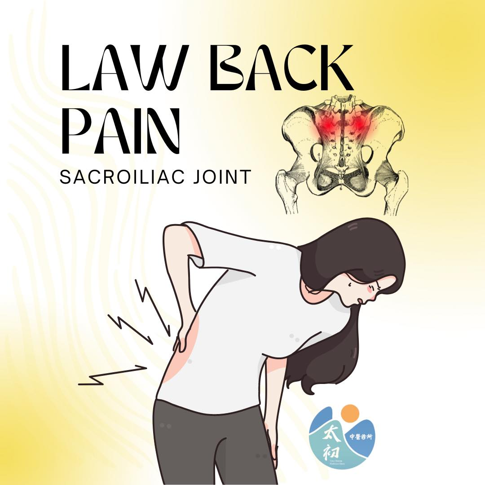

#下背痛 是現代文明病，您是否也深受其擾？
#下背痛 是現代文明病，您是否也深受其擾？
#下背痛與薦髂關節SIJ
薦髂關節由薦椎與左右髂骨共同形成，是構成骨盆活動功能的重要關節面。
若因不良姿態造成關節面卡壓而失去該有的活動角度，便會產生長期、慢性的下背痛。痛起來可以從數天到數月，嚴重者可以撐到數年。
薦髂關節痛，是下背痛常見的一種表現形式，疼痛的位置在下背後骨突與薦椎交接的位置。造成此類疼痛的原因，除了突發性外傷碰撞以外，最常見的是日積月累的不良體態與姿勢所造成。
#下背痛與骨盆
薦髂關節的失能，多源自於骨盆多角度的歪斜錯位，今日受下背痛困擾已兩年多的30+歲年輕女性，在透過徒手校正骨盆後，獲得了極大程度的改善，下背終於恢復了該有的輕鬆。
👱♀️："我覺得蠻好的，這是我兩年來，覺得改善最多的一次"
這期間，打針、注射、電療、熱敷、運動訓練、徒手治療，該有的檢查與治療都沒少過，當下都能獲得小幅度改善，但維持個2-3天便又打回原形。
#骨盆徒手校正
骨盆由髂骨與薦椎所構成，其關節間的失能是造成下背痛常見的原因，而關節的失能來自於多角度的錯位偏移，透過徒手校正多角度的骨盆錯位，是處理此類疼痛最佳的切入點，唯有恢復骨盆的健全活動功能，與日常正確姿態的使用及維持，才能真正擺脫惱人的下背痛。
祝大家都能有個功能健全的骨盆!!
太初中醫診所
中醫師 黃彥鈞
